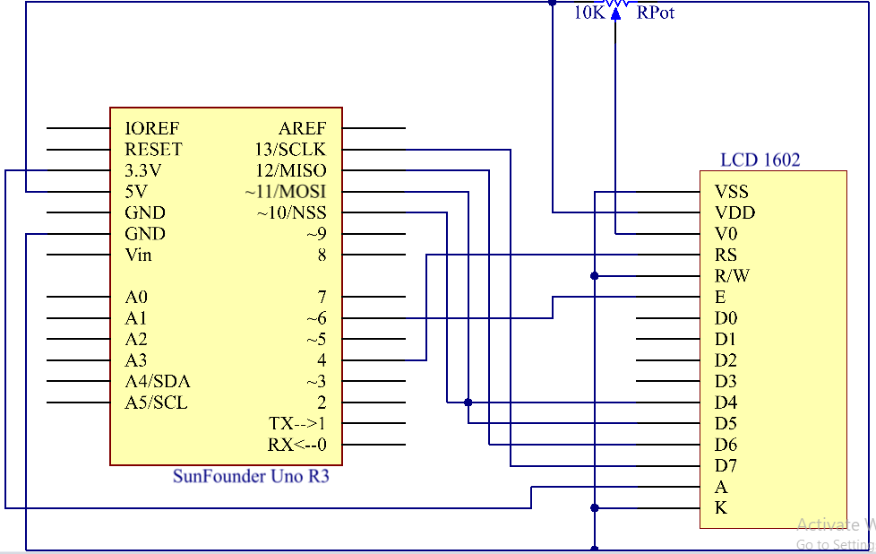
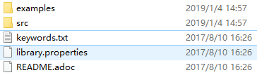

Lesson 14 LCD1602¶
Introduction¶
In this lesson, we will learn how to use an LCD1602 to display characters and strings. LCD1602, or 1602 character-type liquid crystal display, is a kind of dot matrix module to show letters, numbers, and characters and so on. It’s composed of 5x7 or 5x11 dot matrix positions; each position can display one character. There’s a dot pitch between two characters and a space between lines, thus separating characters and lines. The number 1602 means on the display, 2 rows can be showed and 16 characters in each. Now let’s check more details!

{kind=link}
Experimental Principle¶
Generally, LCD1602 has parallel ports, that is, it would control several pins at the same time. LCD1602 can be categorized into eight-port and four-port connections. If the eight-port connection is used, then all the digital ports of the Uno board are almost completely occupied. If you want to connect more sensors, there will be no ports available. Therefore, the four-port connection is used here for better application.
Pins of LCD1602 and their functions¶
VSS: connected to ground
VDD: connected to a +5V power supply
VO: to adjust the contrast
RS: A register select pin that controls where in the LCD’s memory you are writing data to. You can select either the data register, which holds what goes on the screen, or an instruction register, which is where the LCD’s controller looks for instructions on what to do next.
R/W: A Read/Write pin to select between reading and writing mode
E: An enabling pin that reads the information when High level (1) is received. The instructions are run when the signal changes from High level to Low level.
D0-D7: to read and write data
A and K: Pins that control the LCD backlight. Connect K to GND and A to 3.3v. Open the backlight and you will see clear characters in a comparatively dark environment.
Principle:¶
Connect K to GND and A to 3.3 V, and then the backlight of the LCD1602 will be turned on. Connect VSS to GND and the LCD1602 to the power source. Connect VO to the middle pin of the potentiometer - with it you can adjust the contrast of the screen display. Connect RS to D4 and R/W pin to GND, which means then you can write characters to the LCD1602. Connect E to pin6 and the characters displayed on the LCD1602 are controlled by D4-D7. For programming, it is optimized by calling function libraries.
The schematic diagram:
{kind=link}
Experimental Procedures¶
Step 1: Build the circuit (make sure the pins are connected correctly. Otherwise, characters will not be displayed properly):
Step 2: Open the code file.
Step 3: Select the Board and Port.
Step 4: Upload the sketch to the board.
Note
you may need to adjust the potentiometer until the LCD1602 can display clearly.
You should now see the characters “SunFounder” and “hello, world” rolling on the LCD.

Code¶
Code Analysis 14-1 Include a library¶
#include <LiquidCrystal.h>// include the library code
With the LiquidCrystal.h file included, you can call the functions in this file later.
LiquidCrystal is a built-in library in the Arduino IDE. You can find the LiquidCrystal folder under the installation path C:/Program Files/Arduino/libraries.
{kind=link}
There is an example in the examples folder. The src folder contains the major part of the library: LiquidCrystal.cpp (execution file, with function implementation, variable definition, etc.) and LiquidCrystal.h (header file, including function statement, Macro definition, struct definition, etc.). If you want to explore how a function is implemented, you can look up in the file LiquidCrystal.cpp.
Code Analysis 14-2 Displayed characters¶
char array1[]=" SunFounder "; //the string to print on the LCD
char array2[]="hello, world! "; //the string to print on the LCD
These are two character type arrays: arry1[] and array2[]. The contents in the quotation marks ”xxx” are their elements, including 26 characters in total (spaces counted). array1[0] stands for the first element in the array, which is a space, and array1[1] means the second element S and so on. So array1[25] is the last element (here it’s also a space).
Code Analysis 14-3 Define the pins of LCD1602¶
LiquidCrystal lcd(4, 6, 10, 11, 12, 13);
Define a variable lcd of LiquidCrystal type. Here use lcd to represent LiquidCrystal in the following code.
The basic format of the LiquidCrysral() function is: LiquidCrystal (rs, enable, d4, d5, d6, d7). You can check the LiquidCrystal.cpp file for details.
So this line defines that pin RS is connected to pin 4, the enable pin to pin 6, and d4-d7 to pin10-13 respectively.
Code Analysis 14-4 Initialize the LCD¶
lcd.begin(16, 2); // set up the LCD's number of columns and rows:
begin(col,row) is to set the display of LCD. Here set as 16 x 2.
Code Analysis 14-5 Set the cursor position of LCD¶
lcd.setCursor(15,0); // set the cursor to column 15, line 0
setCursor(col,row) sets the position of the cursor which is where the characters start to show. Here set it as 15col, 0 row.
Code Analysis 14-6 LCD displays the elements inside array1[]and array2[]¶
for ( int positionCounter1 = 0; positionCounter1 < 26;
positionCounter1++)
{
lcd.scrollDisplayLeft(); //Scrolls the contents of the display one space
to the left.
lcd.print(array1[positionCounter1]); // Print a message to the LCD.
delay(tim); //wait for 250 microseconds
}
When *positionCounter1*\ =0, which accords with *positionCounter1*\ <26,
*positionCounter1* adds 1. Move one bit to the left through
*lcd.scrollDisplayLeft()*. Make the LCD display array1[0] by
*lcd.print*\ (array1[positionCounter1]) and delay for *tim* ms (250 ms).
After 26 loops, all the elements in *array1[]* have been displayed.
lcd.clear(); //Clears the LCD screen.
Clear the screen with *lcd.clear()* so it won't influence the display
next time.
lcd.setCursor(15,1); // set the cursor to column 15, line 1 // Set the
cursor at Col. 15 Line 1, where the characters will start to show.
for (int positionCounter2 = 0; positionCounter2 < 26;
positionCounter2++)
{
lcd.scrollDisplayLeft(); //Scrolls the contents of the display one space
to the left.
lcd.print(array2[positionCounter2]); // Print a message to the LCD.
delay(tim); //wait for 250 microseconds
}
Similarly, the code is to display the elements in array2[] on the LCD. Therefore, you will see “SunFounder” scroll in the top line of the LCD, move left until it disappears. And then in the bottom line, “hello, world ! ” appears, scrolls to the left until it disappears.